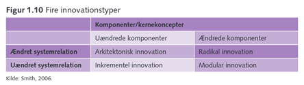

Invention:
Innovation:
Diffusion:
Eks
Innovationsprodukter:
Produktinnovation:
Innovation af et produkt
Eks
Serviceinnovation:
Eks:
Procesinnovation:
Innovation af en proces
Eks
Innovationsdrivere:
Entreprenøren:
Innovation opstand.
Lyst til skabe.
Løse problemer.
Individet er drivkraft.
% økonomisk gevinst
Originalitet.
Teknologisk/økonomisk stikord:
Udvikler inde for kendt felt
Teknologi
Forbedringer.
Strategisk stikord:
Nye muligheder i ældre produkter.
Markedsføring
Økonomisk gevinst
Ledelse/Kultur
Folkets ønske
Brugerdrevet:
Brugerfeedback
Spørge og undersøge adfærd
7 forskellige kilder til innovation (druckers):
Ikke forventlige muligheder
Uoverensstemmelser
Forventninger som ikke bliver indfriet
Behov for procesændringer
LEAN produktion
Ændringer på markedet
Demografi
En anden måde at se tingene på
Ny viden
Inddragelse af brugere:
Brugerinnovation: Kunden siger hvad de gerne vil have til teamet, de hjælper med innovation og teamet kan vælge at gå den vej
Brugertest: Kunden kan få lov til at teste produktet, men de hjælper ikke med at udvikle produktet, men firmaet kan se hvad brugerens reaktion på tingen er
Brugerdeltagelse: Brugerne ved ikke hvad de vil have, men de hjælper lidt med til at komme på ideer
Udforskning af brugere: Brugerne ved ikke hvad de vil have, firmaet har en svær vinkel at skulle arbejde ud fra, da de måske heller ikke helt selv ved hvad de arbejder på vej hen mod.
Innovationstyper / innovationsgrader:
Typer
Radikal: Nyt og banebrydende, ikke set tidligere.
InRkrementel: Forbedring af noget eksisterende.
Modular: Bruger eksisterende system, men bruger nyere komponenter.
Arkitektonisk: Bruger eksisterende komponenter, men nyt system.
Eksempler:
Radikal: Motordrevne landbrugsmaskiner.
Inkrementel: Microsoft Office Pakken.
Modular: Ny Digitale Smartphones (iPhone), TV komponenete (OLED).
Arkitektonisk: Telefoner og Smartphones.
